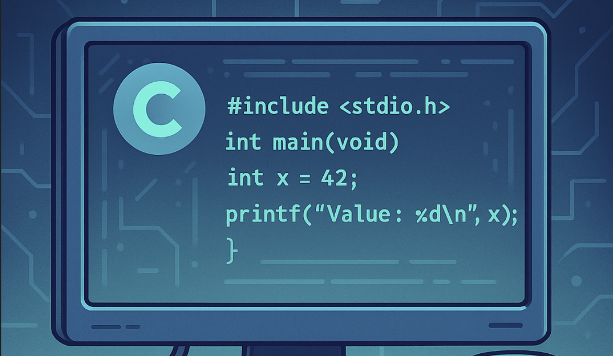

Neural Style Transfer
This project uses Neural Style Transfer to combine the content of one image with the artistic style of another, creating visually unique outputs.
Image Generation with StyleGAN
This project explores StyleGAN to generate realistic images from random noise. It allows control over features at different levels.
CSSE2310: Computer Systems
This collection showcases fundamental computer systems and principles programming skills, encompassing projects in string manipulation and algorithm design, system utilities and process management, and network programming with multi-threading (client-server image transformation).
Personal Portfolio Website
This project demonstrates proficiency in front-end web development, utilizing HTML for structure, CSS for styling, and JavaScript for interactive elements. It showcases the ability to create a responsive and engaging personal portfolio website.

Snake Game AI
This project uses PyTorch to create a simple neural network which is able to play the Snake Game. Both the game and AI is personally made. We use Q-learning with LSTM techniques to apply reinforcement learning on rewards.

A* Algorithm Visualization
This is a very simple project. A visualization of the A* algorithm that I created after learning about them in my data structures and algorithm course.
Sentiment Sleuth
A sentiment analysis app built with a fine-tuned BERT model, classifying tweets or reviews as positive, negative, or neutral. It visualizes emotional trends with interactive charts and integrates real-time Twitter data.
AI Flashcard Generator
Upload lecture slides or paste notes, and this app generates flashcards using GPT-3.5 API for active recall. Built with vanilla JS and OpenAI, with a clean, responsive frontend.
Personal Portfolio Website
This project demonstrates proficiency in front-end web development, utilizing HTML for structure, CSS for styling, and JavaScript for interactive elements. It showcases the ability to create a responsive and engaging personal portfolio website.